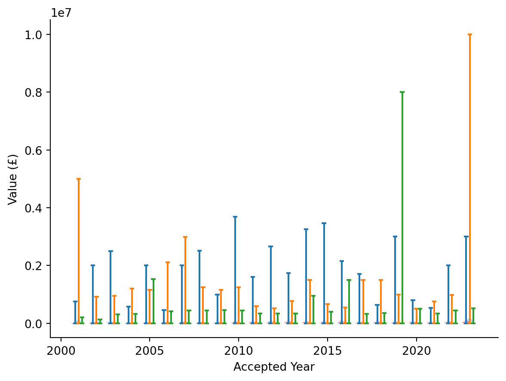
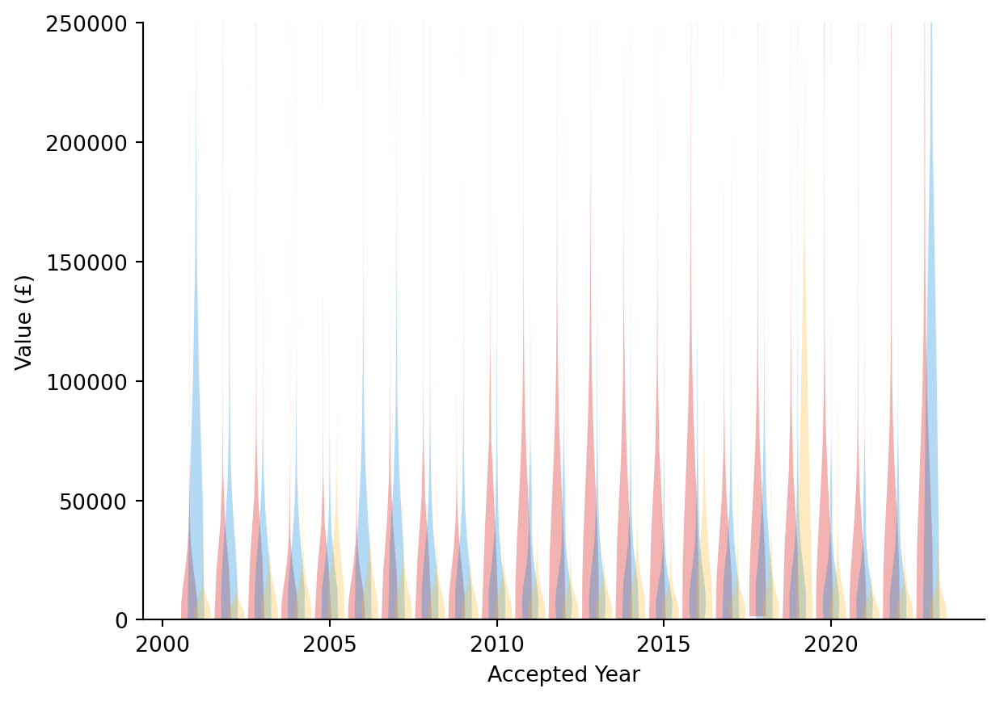

Show the code
import polars as pl
import altair as alt
import vegafusion
alt.data_transformers.enable("vegafusion")
import matplotlib.pyplot as plt
import numpy as np
from IPython.display import display2024-10-14
I’m interested to know more about the donations made to the UK’s political parties. More specifically, I’m curious to know how the donations are spread among donors. The information is readily available from the electoral comission. I’ve downloaded everything from the start of 2001 to the end of 2023. I omitted donations from the parties themselves, which I think is just them moving money from the central office into constituencies.
Let’s get an overview of the data.
| statistic | RegulatedEntityName | Value | AcceptedDate | AccountingUnitName | DonorName | AccountingUnitsAsCentralParty | IsSponsorship | DonorStatus | RegulatedDoneeType | DonationType | NatureOfDonation | IsReportedPrePoll | IsBequest | IsAggregation | RegulatedEntityId | DonorId | CampaigningName | RegisterName | IsIrishSource |
|---|---|---|---|---|---|---|---|---|---|---|---|---|---|---|---|---|---|---|---|
| str | str | str | str | str | str | f64 | f64 | str | str | str | str | str | f64 | f64 | f64 | f64 | str | str | f64 |
| "count" | "70669" | "70669" | "70669" | "70669" | "70669" | 70669.0 | 70669.0 | "70669" | "0" | "70669" | "11386" | "42917" | 70669.0 | 70669.0 | 70669.0 | 70669.0 | "0" | "70669" | 70116.0 |
| "null_count" | "0" | "0" | "0" | "0" | "0" | 0.0 | 0.0 | "0" | "70669" | "0" | "59283" | "27752" | 0.0 | 0.0 | 0.0 | 0.0 | "70669" | "0" | 553.0 |
| "mean" | null | null | null | null | null | 0.049527 | 0.010146 | null | null | null | null | null | 0.012735 | 0.246898 | 116.895555 | 41802.893136 | null | null | 0.000242 |
| "std" | null | null | null | null | null | null | null | null | null | null | null | null | null | null | 635.27884 | 28796.123603 | null | null | null |
| "min" | "Advance Together [De-registere… | "£0.00" | "01/01/2002" | "ALDC" | " A D Gatling" | 0.0 | 0.0 | "Company" | null | "Cash" | "Administration services" | "False" | 0.0 | 0.0 | 17.0 | 1.0 | null | "Great Britain" | 0.0 |
| "25%" | null | null | null | null | null | null | null | null | null | null | null | null | null | null | 52.0 | 18697.0 | null | null | null |
| "50%" | null | null | null | null | null | null | null | null | null | null | null | null | null | null | 53.0 | 34448.0 | null | null | null |
| "75%" | null | null | null | null | null | null | null | null | null | null | null | null | null | null | 90.0 | 67845.0 | null | null | null |
| "max" | "women4theworld [De-registered … | "£999.92" | "31/12/2023" | "kingston upon Hull" | "the capital dairy Company ltd" | 1.0 | 1.0 | "Unincorporated Association" | null | "Visit" | "Travel" | "False" | 1.0 | 1.0 | 12922.0 | 102542.0 | null | "Northern Ireland" | 1.0 |
There’s some cleaning required here. The dates and donation value are strings, but we want to convert them to dates and numbers.
| statistic | Value | AcceptedDate |
|---|---|---|
| str | f64 | str |
| "count" | 70669.0 | "70669" |
| "null_count" | 0.0 | "0" |
| "mean" | 17936.255859 | "2013-01-10 17:57:47.042000" |
| "std" | 101902.71875 | null |
| "min" | 0.0 | "2001-02-16" |
| "25%" | 1500.0 | "2007-11-09" |
| "50%" | 3000.0 | "2013-05-25" |
| "75%" | 9545.0 | "2018-06-01" |
| "max" | 1e7 | "2023-12-31" |
I’m going to mostly work with the values of donations aggregated by year. A year is long enough to get a good number of donations to look at, but granular enough that we can see some patterns, like the big spikes for the 2010, 2019, and 2024 elections.
I’m going to concentrate on the three main parties: the Conservatives, Labour, and Liberal Democrats. I’ve chucked in Reform UK, simply because the ~£11 million they were donated in 2019 put them, briefly, in the same league, financially.
main_parties = ["Labour Party", "Conservative and Unionist Party", "Liberal Democrats", "Reform UK"]
party_colours = ["#d50000", "#0087dc", "#FDBB30", "cyan"]
donations.select(
["Value", "RegulatedEntityName", "AcceptedDate"]
).filter(
pl.col("RegulatedEntityName").is_in(main_parties)
).sort(
"AcceptedDate"
).group_by_dynamic(
"AcceptedDate", every="1y", group_by="RegulatedEntityName"
).agg(
pl.col("Value").sum().alias("Total Donations (£)")
).plot.bar(
x="AcceptedDate",
y="Total Donations (£)",
color=alt.Color("RegulatedEntityName", scale=alt.Scale(domain=main_parties, range=party_colours)),
).properties(width="container")The total donations aren’t the only interesting metric here. I want to know what the average value of a donation is here. I won’t use the mean, as the values are very skewed1, but the more robust median. I’ve included the interquartile range as bands either side of the line.
donation_four_parties = donations.with_columns(
pl.col("AcceptedDate").dt.year().alias("Year")
).filter(
pl.col("RegulatedEntityName").is_in(main_parties)
)
line_four_parties = alt.Chart(donation_four_parties).mark_line().encode(
x='Year',
y='median(Value)',
color=alt.Color("RegulatedEntityName", scale=alt.Scale(domain=main_parties, range=party_colours))
).properties(width="container")
band_four_parties = alt.Chart(donation_four_parties).mark_errorband(extent='iqr').encode(
x='Year',
y=alt.Y('Value').title('Median Value (£)'),
color=alt.Color("RegulatedEntityName", scale=alt.Scale(domain=main_parties, range=party_colours))
)
band_four_parties + line_four_partiesI’ll admit, I included Reform UK for humour here. Let’s just look at the three major parties.
donation_three_parties = donations.with_columns(
pl.col("AcceptedDate").dt.year().alias("Year")
).filter(
pl.col("RegulatedEntityName").is_in(main_parties[:-1])
)
line_three_parties = alt.Chart(donation_three_parties).mark_line().encode(
x='Year',
y='median(Value)',
color=alt.Color("RegulatedEntityName", scale=alt.Scale(domain=main_parties[:-1], range=party_colours[:-1]))
).properties(width="container")
band_three_parties = alt.Chart(donation_three_parties).mark_errorband(extent='iqr').encode(
x='Year',
y=alt.Y('Value').title('Median Value (£)'),
color=alt.Color("RegulatedEntityName", scale=alt.Scale(domain=main_parties[:-1], range=party_colours[:-1]))
)
band_three_parties + line_three_partiesRemarkably, between 2006 and 2012, the median value of donations to the Conservatives was greater than the 75th centile of Labour. Labour and the Liberal Democrats had similar distributions of donations until 2020. The post-coalition elections were not kind to the Lib Dems.
donations.with_columns(
pl.col("AcceptedDate").dt.year().alias("Year")
).select(
["Value", "Year", "NatureOfDonation"]
).sort(
pl.col("Year")
).group_by(
["Year", "NatureOfDonation"]
).agg(
pl.col("Value").sum()
).plot.line(
x="Year",
y="Value",
color="NatureOfDonation"
).properties(width="container")There’s a field “NatureOfDonation” in the dataset. There are a few kinds of state funding in here that don’t tell us anything about who is donating to the parties, so we can ignore those.
The main thing to take away is that most of the money doesn’t have a “NatureOfDonation”. There’s also “DonationType”
| DonationType | count | TotalValue |
|---|---|---|
| str | u32 | f32 |
| "Cash" | 58778 | 9.73968896e8 |
| "Exempt Trust" | 435 | 3.6146e6 |
| "Visit" | 19 | 276699.15625 |
| "Permissible Donor Exempt Trust" | 51 | 447430.65625 |
That seems more important to us. I’m unclear on what “Visit” is, but the value is low, so I’ll leave it in. “Cash” is obvious (and something we care about). The other two are types of bequest left in a will.
Donations look broadly the same if we filter out the state funding.
selected_donations = donations.with_columns(
pl.col("AcceptedDate").dt.year().alias("Year"),
pl.col("NatureOfDonation").fill_null(strategy="zero")
).select(
["DonationType", "NatureOfDonation", "Value", "Year", "RegulatedEntityName"]
).filter(
[
pl.col("NatureOfDonation").is_in(
[
"Assistance for Parties (Scottish Parliament)",
"Cranborne Money (House of Lords)",
"Financial Assistance for Parties in NI Assembly",
"Policy Development Grant",
"Short Money (House of Commons)",
"Start Up Grant (Discontinued)"
]
).not_(),
pl.col("RegulatedEntityName").is_in(main_parties)
]
)selected_donations_3 = selected_donations.filter(pl.col("RegulatedEntityName") != "Reform UK")
line_selected_donations_3 = alt.Chart(selected_donations_3).mark_line().encode(
x='Year',
y='median(Value)',
color=alt.Color("RegulatedEntityName", scale=alt.Scale(domain=main_parties[:-1], range=party_colours[:-1]))
).properties(width="container")
band_selected_donations_3 = alt.Chart(selected_donations_3).mark_errorband(extent='iqr').encode(
x='Year',
y=alt.Y('Value').title('Median Value (£)'),
color=alt.Color("RegulatedEntityName", scale=alt.Scale(domain=main_parties[:-1], range=party_colours[:-1]))
)
band_selected_donations_3 + line_selected_donations_3OK, so much for the how the value of donations is distributed. It’s quite interesting that the Conservatives have received a fairly similar distribution of donations, except in election years, where the median value (and total) spikes. The exception is the last election cycle.
Meanwhile, Labour and the Liberal Democrats have had a similar distribution (though different total value) to one another until the last election cycle, where Labour’s donations have steadily increased, and the Liberal Democrats’ have dropped.
Now, who is giving all this money? Here are the top 10 donors:
who_donations = donations.select(
pl.exclude(["AccountingUnitId",
"AccountingUnitName",
"AccountingUnitsAsCentralParty",
"IsSponsorship",
"RegulatedDoneeType",
"IsReportedPrePoll",
"IsBequest",
"IsAggregation",
"RegulatedEntityId",
"CampaigningName",
"IsIrishSource"])
).with_columns(
pl.col("NatureOfDonation").fill_null(strategy="zero")
).filter(
pl.col("NatureOfDonation").is_in(
[
"Assistance for Parties (Scottish Parliament)",
"Cranborne Money (House of Lords)",
"Financial Assistance for Parties in NI Assembly",
"Policy Development Grant",
"Short Money (House of Commons)",
"Start Up Grant (Discontinued)"
]
).not_()
).sort("Value", descending=True)
biggest_donors = who_donations.select(
["DonorName", "RegulatedEntityName", "Value"]
).group_by(["DonorName", "RegulatedEntityName"]).sum().sort(
"Value", descending=True
).pivot(
index="DonorName",
on="RegulatedEntityName"
).head(10)
biggest_donors[[s.name for s in biggest_donors if not (s.null_count() == biggest_donors.height)]]| DonorName | Labour Party | Conservative and Unionist Party | Reform UK | Liberal Democrats | Co-operative Party |
|---|---|---|---|---|---|
| str | f32 | f32 | f32 | f32 | f32 |
| "Unite the Union" | 4.8891412e7 | null | null | null | null |
| "UNISON" | 3.7628308e7 | null | null | null | 10000.0 |
| "GMB" | 3.6300552e7 | null | null | null | null |
| "National Conservative Draws So… | null | 1.3818294e7 | null | null | null |
| "Union of Shop Distributive and… | 1.3506607e7 | null | null | null | null |
| "Union of Shop, Distributive an… | 1.2255292e7 | null | null | null | null |
| "Lord John Sainsbury" | null | 1.1257435e7 | null | null | null |
| "Mr Christopher Harborne" | null | null | 1.019e7 | null | null |
| "Lord David Sainsbury" | 5.071808e6 | null | null | 1.0125e7 | null |
| "Communication Workers Union" | 9.473529e6 | null | null | null | null |
So there’s a lot of money coming to Labour from the unions. This makes sense with the history of the Labour party.
There’s also the “National Conservative Draws Society”, which is a pretty sketchy way of concealing donations to political parties.
Then, there are the private donors. Journalists sometimes make a noise about how the unions and the Labour party are tied together, but there are three guys there who have donated about £35 million between them.
I spotted something here. Christopher Harborne made the news donating £1 million to Boris Johnson, which should have been recorded. There’s a “DonorId” field in the dataset. Maybe we’ll see the donation if we look at DonorId instead.
biggest_donors_by_id = who_donations.select(
["DonorId", "RegulatedEntityName", "Value"]
).group_by(["DonorId", "RegulatedEntityName"]).sum().sort(
"Value", descending=True
).pivot(
index="DonorId",
on="RegulatedEntityName"
).head(10)
biggest_donors_by_id[[s.name for s in biggest_donors_by_id if not (s.null_count() == biggest_donors_by_id.height)]]| DonorId | Labour Party | Conservative and Unionist Party | Reform UK | Liberal Democrats | Co-operative Party |
|---|---|---|---|---|---|
| i64 | f32 | f32 | f32 | f32 | f32 |
| 55387 | 2.5267816e7 | null | null | null | null |
| 34448 | 1.8958894e7 | null | null | null | null |
| 34447 | 1.5817447e7 | null | null | null | null |
| 34446 | 1.2251777e7 | null | null | null | null |
| 38732 | null | 1.0902435e7 | null | null | null |
| 45958 | 1.0799636e7 | null | null | null | null |
| 87126 | null | null | 1.019e7 | null | null |
| 74671 | null | null | null | 1.0125e7 | null |
| 34196 | null | null | null | null | 8.69897e6 |
| 36362 | null | 7824772.5 | null | null | null |
Still not there. If we look at all the Christophers Harborne in the data, we can see something I find very annoying.
| DonorName | DonorId | Value |
|---|---|---|
| str | i64 | f32 |
| "Mr Christopher Harborne" | 87126 | 1.019e7 |
| " Christopher Charles Sherriff … | 95060 | 1.515e6 |
| "Mr Christopher C S Harborne" | 84977 | 62500.0 |
| " Christopher C S Harborne" | 84275 | 50000.0 |
| " Christopher C Harborne" | 8987 | 50000.0 |
| " Christopher C Harborne" | 12223 | 50000.0 |
| "Mr Christopher C Harborne" | 6441 | 19994.0 |
| " Christopher C Harborne" | 4527 | 19994.0 |
| "Mr Christopher C Harborne" | 997 | 10000.0 |
| "Mr Christopher C Harborne" | 12780 | 8000.0 |
| "Mr Christopher C Harborne" | 18353 | 8000.0 |
| " Christopher C Harborne" | 11283 | 400.0 |
Mr Christopher Charles Sherriff Harborne has donated with a bunch of variations on his name. What’s the point of a DonorId that doesn’t track this?! A couple of these might be other Christophers, but I’m willing to bet a lot of these are the same guy. It might not be deliberate obfuscation, but it should be clearer who is the same person donating multiple times.
Anyway, let’s look at a breakdown of donor types by party:
who_donations.select(
["RegulatedEntityName", "DonorStatus", "Value"]
).filter(
pl.col("RegulatedEntityName").is_in(main_parties)
).group_by(
["RegulatedEntityName", "DonorStatus"]
).sum().plot.bar(
x=alt.X("RegulatedEntityName", axis=alt.Axis(labelAngle=-45)),
y="Value",
color="DonorStatus"
).properties(width="container")It’s quite astonishing how much of their money Labour gets from the unions! If they didn’t get their union money, their donations would be pretty similar to the Liberal Democrats.
If you look at the top 20 individual donors, you can see another instance of someone donating twice with different names. You can also see that political donations at the top haven’t even heard of gender equality.
with pl.Config(tbl_rows=20):
biggest_donors_individual = who_donations.select(
["DonorName", "DonorStatus", "RegulatedEntityName", "Value"]
).filter(
pl.col("DonorStatus") == "Individual"
).select(
pl.exclude("DonorStatus")
).group_by(["DonorName", "RegulatedEntityName"]).sum().sort(
"Value", descending=True
).pivot(
index="DonorName",
on="RegulatedEntityName"
).head(20)
display(biggest_donors_individual[[s.name for s in biggest_donors_individual if not (s.null_count() == biggest_donors_individual.height)]])| DonorName | Conservative and Unionist Party | Reform UK | Liberal Democrats | Labour Party | The Reclaim Party | Sinn Féin | Co-operative Party |
|---|---|---|---|---|---|---|---|
| str | f32 | f32 | f32 | f32 | f32 | f32 | f32 |
| "Lord John Sainsbury" | 1.1257435e7 | null | null | null | null | null | null |
| "Mr Christopher Harborne" | null | 1.019e7 | null | null | null | null | null |
| "Lord David Sainsbury" | null | null | 1.0125e7 | 5.071808e6 | null | null | null |
| "Lord David Sainsbury of Turvil… | null | null | null | 9.316e6 | null | null | null |
| "Sir Michael L Davis" | 5524949.5 | null | null | null | null | null | null |
| " Graham H Edwards" | 5.450804e6 | null | null | null | null | null | null |
| " Mohamed Younes Mansour Lotfy … | 5e6 | null | null | null | null | null | null |
| "Sir Paul Getty" | 5e6 | null | null | null | null | null | null |
| " Francis X Hester" | 5e6 | null | null | null | null | null | null |
| "Lord Michael S Farmer" | 4.99453e6 | null | null | null | null | null | null |
| "Mr Gary Lubner" | null | null | null | 4.6695e6 | null | null | 50000.0 |
| "Mr JEREMY HOSKING" | null | null | null | null | 3.623949e6 | null | null |
| "Mr John S Wheeler" | 3.563301e6 | null | null | null | null | null | null |
| "Mr William E Hampton" | null | null | null | null | null | 3.462866e6 | null |
| " Nigel Doughty" | null | null | null | 3.305201e6 | null | null | null |
| "Lord James Roger Lupton" | 3.2999e6 | null | null | null | null | null | null |
| "Mr John E Gore" | 3.241499e6 | null | null | null | null | null | null |
| " Lakshmi Mittal" | 75000.0 | null | null | 3.125e6 | null | null | null |
| "Mr John Griffin" | 3.1085e6 | null | null | null | null | null | null |
| "Mr Malcolm S Healey" | 3.01e6 | null | null | null | null | null | null |
labour_donations = [np.array(donations.filter(
pl.col("RegulatedEntityName") == "Labour Party"
).with_columns(
pl.col("AcceptedDate").dt.year().alias("Year")
).filter(
pl.col("Year") == year
).select(
"Value"
)).reshape(-1) for year in range(2001, 2024)]
con_donations = [np.array(donations.filter(
pl.col("RegulatedEntityName") == "Conservative and Unionist Party"
).with_columns(
pl.col("AcceptedDate").dt.year().alias("Year")
).filter(
pl.col("Year") == year
).select(
"Value"
)).reshape(-1) for year in range(2001, 2024)]
lib_dem_donations = [np.array(donations.filter(
pl.col("RegulatedEntityName") == "Liberal Democrats"
).with_columns(
pl.col("AcceptedDate").dt.year().alias("Year")
).filter(
pl.col("Year") == year
).select(
"Value"
)).reshape(-1) for year in range(2001, 2024)]I don’t really have any conclusions here. I hadn’t realised quite how much money was coming in to political parties. This isn’t everything; if you donate below certain thresholds you don’t have to report anything. Given the eye-watering sums at the top though, you do get a good sense of how much money everyone is getting.
I also hadn’t realised how dependent the Labour party is on unions. Another time, I might look into why the median value of their donations has increased recently, but this is already long enough.
I love a violin plot, or a box plot to compare distributions. However, this time, the values are so skewed that when I tried it I got this:
fig, ax = plt.subplots()
lab_violins = ax.violinplot(labour_donations, [x-0.2 for x in range(2001,2024)], widths=0.5)
con_violins = ax.violinplot(con_donations, [x for x in range(2001,2024)], widths=0.5)
lib_dem_violins = ax.violinplot(lib_dem_donations, [x+0.2 for x in range(2001,2024)], widths=0.5)
for pc in lab_violins['bodies']:
pc.set_facecolor(party_colours[0])
for pc in con_violins['bodies']:
pc.set_facecolor(party_colours[1])
for pc in lib_dem_violins['bodies']:
pc.set_facecolor(party_colours[2])
ax.set_xlabel("Accepted Year")
ax.set_ylabel("Value (£)")
ax.spines['top'].set_visible(False)
ax.spines['right'].set_visible(False)
plt.show()
The maximum values are so high that you can’t even see the distribution. In any case, they’re kind of boring, and just showing the median and interquartile ranges is more informative.
fig, ax = plt.subplots()
lab_violins = ax.violinplot(labour_donations, [x-0.2 for x in range(2001,2024)], widths=0.5, showextrema=False)
con_violins = ax.violinplot(con_donations, [x for x in range(2001,2024)], widths=0.5, showextrema=False)
lib_dem_violins = ax.violinplot(lib_dem_donations, [x+0.2 for x in range(2001,2024)], widths=0.5, showextrema=False)
for pc in lab_violins['bodies']:
pc.set_facecolor(party_colours[0])
for pc in con_violins['bodies']:
pc.set_facecolor(party_colours[1])
for pc in lib_dem_violins['bodies']:
pc.set_facecolor(party_colours[2])
ax.set_xlabel("Accepted Year")
ax.set_ylabel("Value (£)")
ax.set_ylim((0,2.5e5))
ax.spines['top'].set_visible(False)
ax.spines['right'].set_visible(False)
plt.show()
breaking the illusion of me doing this “as live”, there’s a bit on how hilariously skewed the distribution is below↩︎